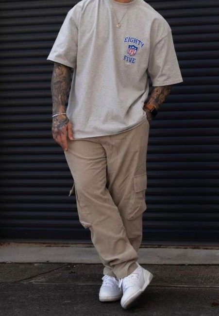
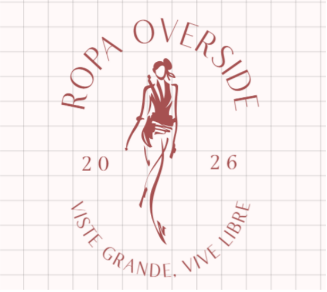
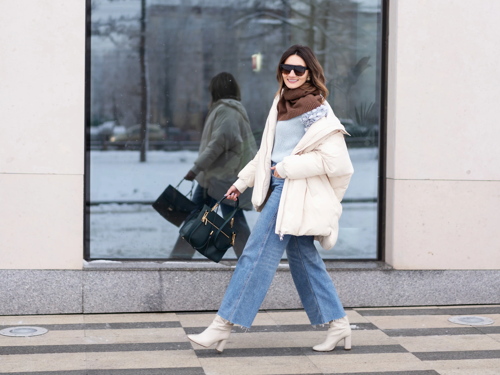

Viste grande. Vive libre.
Urban Oversize es una marca de moda urbana inspirada en la cultura streetwear y en la tendencia de prendas amplias que priorizan la comodidad y el estilo. La marca surge con la intención de ofrecer ropa moderna para jóvenes que buscan expresar su personalidad a través de un estilo relajado, auténtico y contemporáneo.
El concepto de la marca se basa en la libertad de movimiento, la autenticidad y la identidad urbana, combinando diseños minimalistas con prendas oversize que reflejan la cultura actual de la moda juvenil.

Diseñar y ofrecer prendas oversize de alta calidad que permitan a los jóvenes expresar su identidad y estilo urbano, brindando comodidad, autenticidad y diseño contemporáneo.
Convertirnos en una marca referente del streetwear en Latinoamérica, reconocida por su estilo urbano, su identidad visual sólida y su conexión con las nuevas generaciones.
Diseños innovadores que reflejan las tendencias actuales de la moda urbana.
Una marca fiel a la cultura streetwear y al estilo urbano contemporáneo.
Prendas oversize diseñadas para brindar libertad de movimiento y confort.

El logotipo de Urban Oversize representa la identidad minimalista y moderna de la marca. Su diseño busca transmitir fuerza, simplicidad y estilo urbano.
Proporciones recomendadas del logotipo:
Estas proporciones permiten mantener la legibilidad y consistencia visual del logotipo en diferentes aplicaciones como redes sociales, etiquetas de ropa, empaques o página web.
La identidad visual de Urban Oversize utiliza una paleta de colores minimalista que representa el estilo urbano moderno. La combinación de negro, blanco, rojo y beige permite crear contraste visual, transmitir energía y mantener una estética elegante y contemporánea.
Negro
Representa elegancia, fuerza y estilo urbano. Es el color principal de la marca y transmite modernidad y minimalismo.
Blanco
Simboliza simplicidad y equilibrio visual. Se utiliza para generar contraste y mejorar la legibilidad del diseño.
Rojo
Representa energía, actitud y personalidad. Se utiliza como color de acento para destacar elementos importantes.
Beige
Aporta calidez y equilibrio visual. Es un tono neutro que conecta con las tendencias actuales del streetwear.
La tipografía Montserrat se utiliza para títulos y encabezados debido a su estilo moderno, geométrico y fácil de leer. Se utiliza principalmente en pesos 500 y 700 para destacar la jerarquía visual en la marca.
La tipografía Poppins se utiliza para textos y contenido general. Su diseño limpio y moderno permite una lectura clara en diferentes dispositivos. Los pesos utilizados son 300, 400 y 500.
La combinación de Montserrat y Poppins crea una identidad visual moderna, profesional y coherente con el estilo urbano de la marca.

La marca Urban Oversize está dirigida principalmente a jóvenes entre 16 y 30 años interesados en la cultura urbana, el streetwear y la moda contemporánea. Este público busca prendas cómodas, modernas y con identidad propia que reflejen su estilo de vida y personalidad.